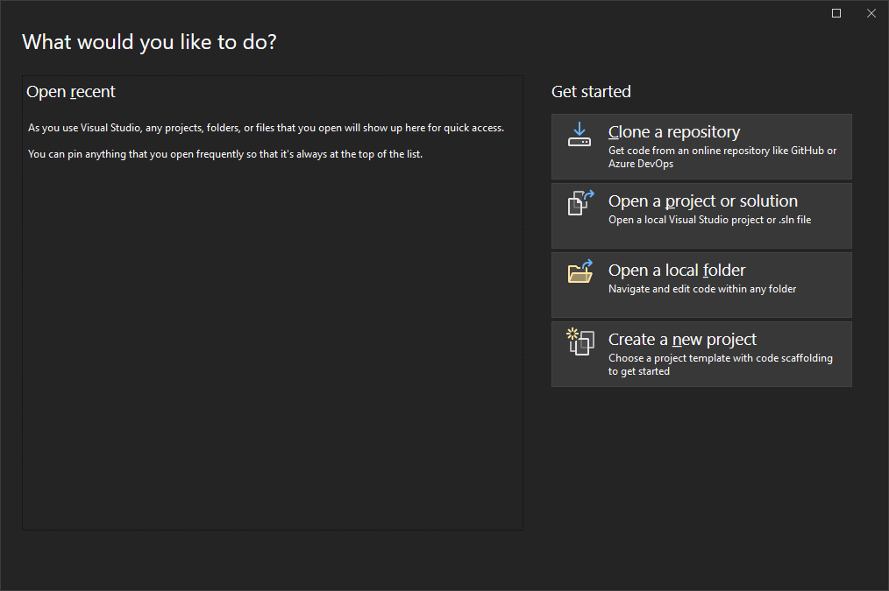

Microsoft Visual Studio IDE¶
Преузимање и инсталација интегрисаног развојног окружења Visual Studio прилично
је једноставна и интуитивна. Microsoft Visual Studio Community Edition је
бесплатно интегрисано развојно окружење намењено појединцима и студентима, као
и програмерима који развијају софтвер отвореног кôда. Да би га преузео са
интернета, потребно је да посетиш веб страницу
visualstudio.microsoft.com/downloads/
и кликнеш на поље Free download које се налази испод наслова Community.
{kind=link}
Када се преузимање заврши, потребно је да покренеш преузети инсталер
VisualStudioSetup.exe. На поруку о упозорењу кликни Run па OK:
{kind=link}
Потом кликни Continue…
{kind=link}
…и сачекај да се са интернета преузму неопходни инсталациони фајлови:
{kind=link}
По преузимању неопходних инсталационих фајлова, приказаће се прозор за одабир
радних пакета (енгл. Workloads). За програмирање у програмском језику C
неопходно је да одабереш радни пакет Desktop development with C++. Након тога
кликни Install.
{kind=link}
Преузимање додатних података са интернета може потрајати.
{kind=link}
По завршетку инсталације кликни OK, затвори инсталациони програм и рестартуј
оперативни систем како би се уклонили непотребни фајлови коришћени током
инсталације.
{kind=link}
Интегрисано развојно окружење Visual Studio можеш покренути из Start менија. Приликом првог покретања појавиће се прозор за пријаву.
{kind=link}
Можеш се пријавити са било којим Microsoft налогом или прескочити пријаву
кликом на Skip this for now. Поступак пријаве и иницијалних подешавања може
потрајати.
{kind=link}
Ови кораци неопходни су само приликом првог покретања Visual Studio окружења. Након иницијалних подешавања и пријаве, окружење је спремно за рад.
{kind=link}
Креирање новог пројекта, унос изворног кода, његово превођење у извршни код и покретање креиране апликације објашњено је у следећој лекцији.